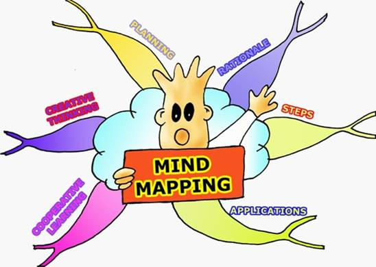
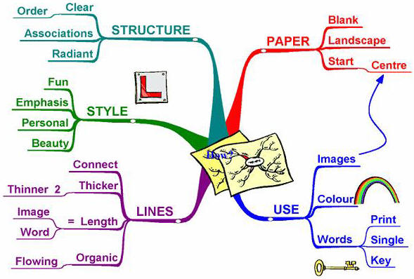

Mind
maps en project management
Op deze
pagina hebben we het over mind map en project management programma's.
Project management programma's zijn interessant wanneer men (grotere)
projecten maakt, vb. om een tijdsplanning in de toekomst uit
te zetten.
Mind Map programma's geven een visueel beeld over hoe/wat men
over een onderwerp denkt.
De lokale kopies van de programma's kan je hier vinden.
Naam: Xmind
Categorie: mind map
Waardeoordeel: 2
Waardeoordeel op een schaal van 5 .. 1 (5='need to have', 3='good
to have', 1='nice to have')
Beschrijving: Xmind is een mind map programma. Nuttig vanaf het derde bachelorjaar.
Naam: Freemind
Categorie: mind map
Waardeoordeel: 1
Waardeoordeel op een schaal van 5 .. 1 (5='need to have', 3='good
to have', 1='nice to have')
Beschrijving: Freemind is een mind map programma. Nuttig vanaf het derde bachelorjaar.
Naam: Gantt project
Categorie: project/time management
Waardeoordeel: 1
Waardeoordeel op een schaal van 5 .. 1 (5='need to have', 3='good
to have', 1='nice to have')
Beschrijving: Dit is een programma om aan time-management te doen. Nuttig vanaf het derde bachelorjaar.
Naam: Taskjuggler
Categorie: project/time management
Waardeoordeel: 1
Waardeoordeel op een schaal van 5 .. 1 (5='need to have', 3='good
to have', 1='nice to have')
Beschrijving: Dit is een programma om aan time-management te doen. Nuttig vanaf het derde bachelorjaar.